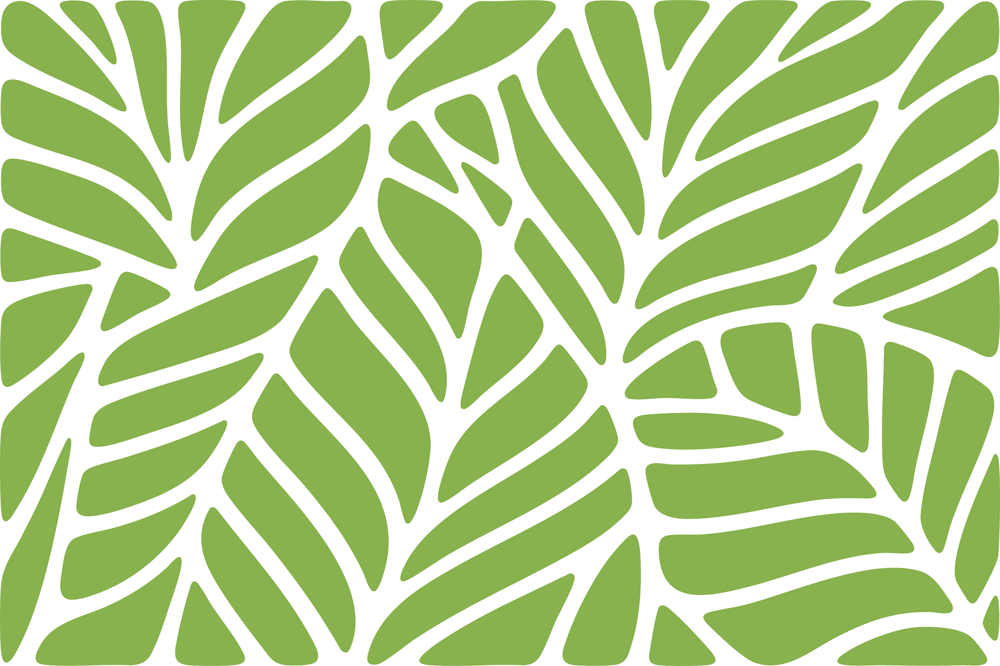
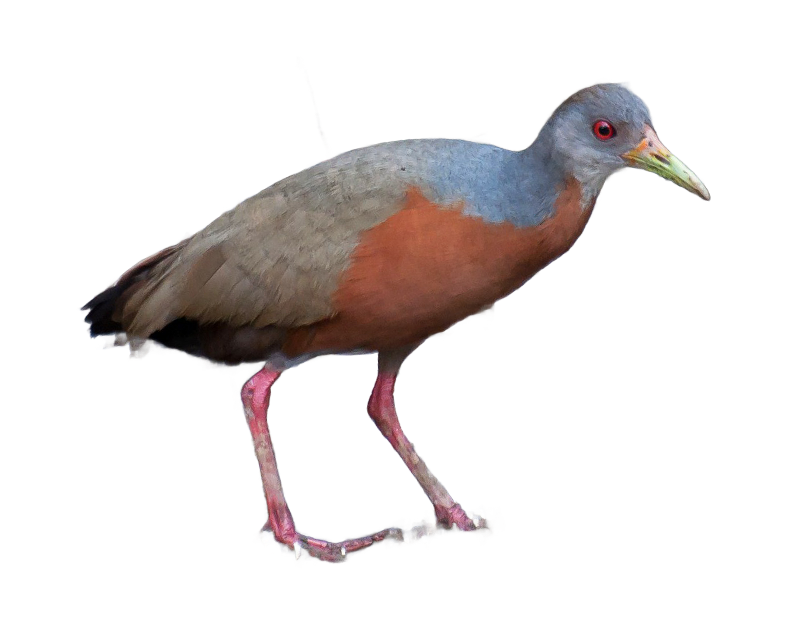

VOCÊ CONHECE O MANGUE?
Quiz do Mangue!
Observe o animal e teste seus conhecimentos sobre a vida no manguezal. Com o cronômetro ligado, você terá 10 segundos para adivinhá-lo. Boa sorte!


5 rodadas
Descubra 5 animais do manguezal, um por rodada!
4 alternativas
Escolha entre quatro alternativas para descobrir o animal correto.
Colete insígnias!
Não desista e tente novamente! Conquiste todas as insígnias especiais do Quiz.
Que bicho do Mangue é esse?
Round 01Crédito da imagem: nome do fotógrafo

Você conseguiu a insígnia: Aprendiz
Você acertou 0 de 5 animais!
Continue aprendendo sobre os animais do mangue e tente novamente!
Mostruário do Mangue
Conheça as espécies que fazem parte do ecossistema do mangue.
Nenhuma espécie encontrada.
Crédito da imagem: nome do fotógrafo